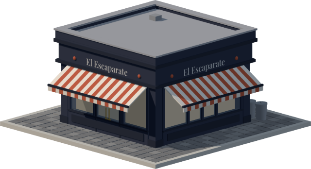

En la calle tienes escaparate.
En internet, la persiana bajada.
Diseño y programo webs para negocios que ya tienen clientes y no tienen presencia en internet. Tres formatos, un presupuesto cerrado por escrito antes de empezar y una persona al otro lado, no un formulario automático.
Presupuesto cerrado por escrito Entrega entre 1 y 4 semanas Mantenimiento opcional después de publicar

Tres formatos, ni uno más
Cada encargo entra por uno de estos tres formatos. Ninguno tiene tarifa de catálogo: el precio sale de lo que tu negocio necesita, y te lo doy cerrado por escrito antes de empezar.
Web de una página
Todo en una sola página: a qué te dedicas, pruebas de ello, dónde estás y un botón para escribirte. Para quien trabaja por recomendación y necesita un sitio solvente al que dirigir a sus clientes.
Web multipágina
Una página por cada servicio, más historia, equipo y contacto. Cuando ofreces varios servicios y necesitas que Google entienda cada uno por separado.
Tienda online
Catálogo, carrito, pago con tarjeta y avisos de pedido. Para vender sin depender de un marketplace que se queda con el margen y con la relación con el cliente.
¿Cuál de los tres es el tuyo?
Cuéntame en cuatro líneas qué negocio tienes y qué necesitas. Te contesto con un precio cerrado y una fecha de entrega, por escrito y sin letra pequeña. Si no soy yo quien debe hacerlo, también te lo digo.
Solicitar presupuestoGratis y sin compromiso.
Proyectos entregados
Metodología de trabajo
Un proceso estructurado en cuatro fases, sin desviaciones presupuestarias: costes cerrados antes de iniciar el proyecto y validación interactiva del desarrollo antes de la liquidación final.
Consultoría inicial y definición del alcance
Análisis de tu modelo de negocio, tu público objetivo y tus metas comerciales. A partir de esa sesión se determina el formato óptimo y se emite una propuesta técnica y económica formal por escrito, con el alcance y los costes cerrados.
Sesión preliminar de asesoramiento sin coste ni compromiso
Prototipado y validación de la interfaz principal
Desarrollo funcional de la página de inicio en un entorno de pruebas, con tus contenidos y tus recursos gráficos reales, para que la revises directamente en el móvil. Esta etapa permite ajustar la dirección visual y la experiencia de uso cuando aún cuesta poco.
Primera semana de desarrollo
Desarrollo integral y optimización técnica
Implementación del resto de secciones, maquetación de contenidos, optimización de la velocidad de carga (Core Web Vitals), compatibilidad multidispositivo y configuración técnica para los buscadores. Sigues el avance mediante un enlace privado de preproducción.
Entre dos y tres semanas, según el formato
Publicación, entrega y autonomía de gestión
Despliegue definitivo en tu propio servidor de alojamiento y bajo tu titularidad de dominio. Entrega de las credenciales de acceso y formación básica para que actualices los contenidos menores por tu cuenta, sin dependencias técnicas continuas.
Fecha de entrega final
Solicita tu presupuesto
Indica brevemente la actividad de tu empresa y los requerimientos principales de tu proyecto. En un plazo máximo de 48 horas laborables recibirás una propuesta técnica formal y un plazo de entrega vinculantes, o bien una valoración objetiva en caso de que tu proyecto requiera un perfil especializado distinto.